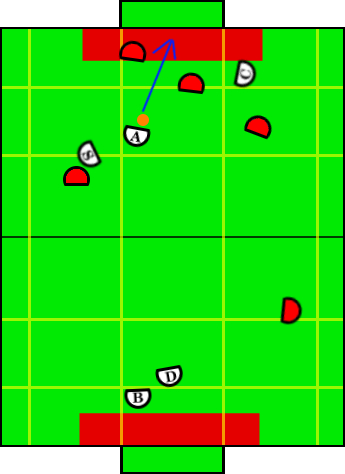

Play: Jam and Shoot
Description:
Basic play that can be transitioned to from various places. If the
aggressor has a good shot on goal, this play is called and the primary
focus is to quickly convert to a shoot and score without the aid of other
robots.
Illustration:

Positions Present:
- Blocker
- Defender
- Aggressor
- Special Op Aggressor
- Creator
Position Strategies:
Blocker + Defender:
Work together cutting down shots in same fashion as described in Loose Defense.
Call TandemBlockerSkill and TandemDefenderSkill
|
Aggressor:
Runs through the ball to open goal spot, arming kicker continuously.
Runs JamAndShootSkill
|
Special Op Aggressor:
Remains behind the aggressor, screening more dangerous opponent on same
side of field from behind.
Runs BehindScreenOffenseSkill, clearly called by the aggressor's action function
|
Creator:
Gets open for a cross crease pass/rebound, looking at the ball.
Calls OppositeReboundOffenseSkill
|
Transitions:
|
Once aggressor has kicked the ball for a certain amount of time OR play timer
has timed out. |
Position Switching:
- Aggressor, SpecialOpAggressor, Creator
|
- If somebody other than aggressor is one with the ball, switch with aggressor.
- keep special op behind the creator (along length of field)
|
|